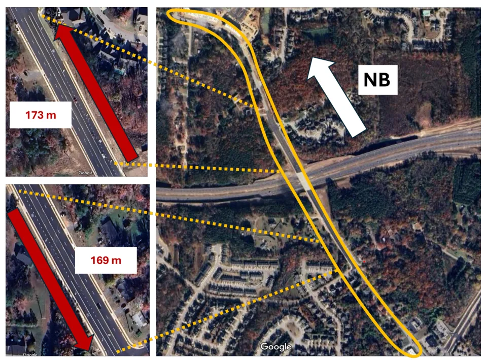
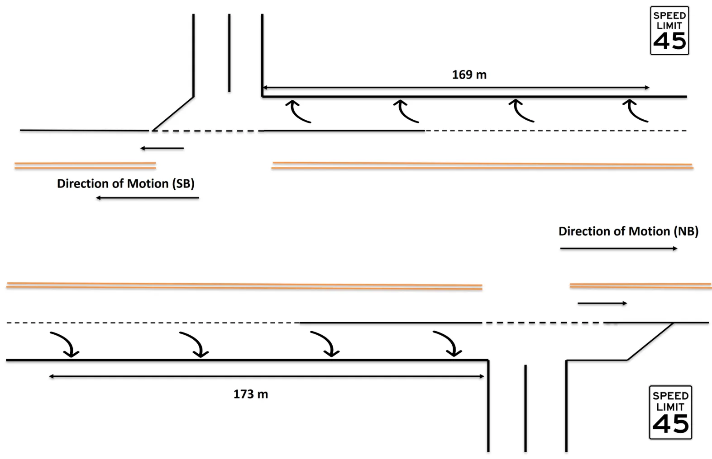
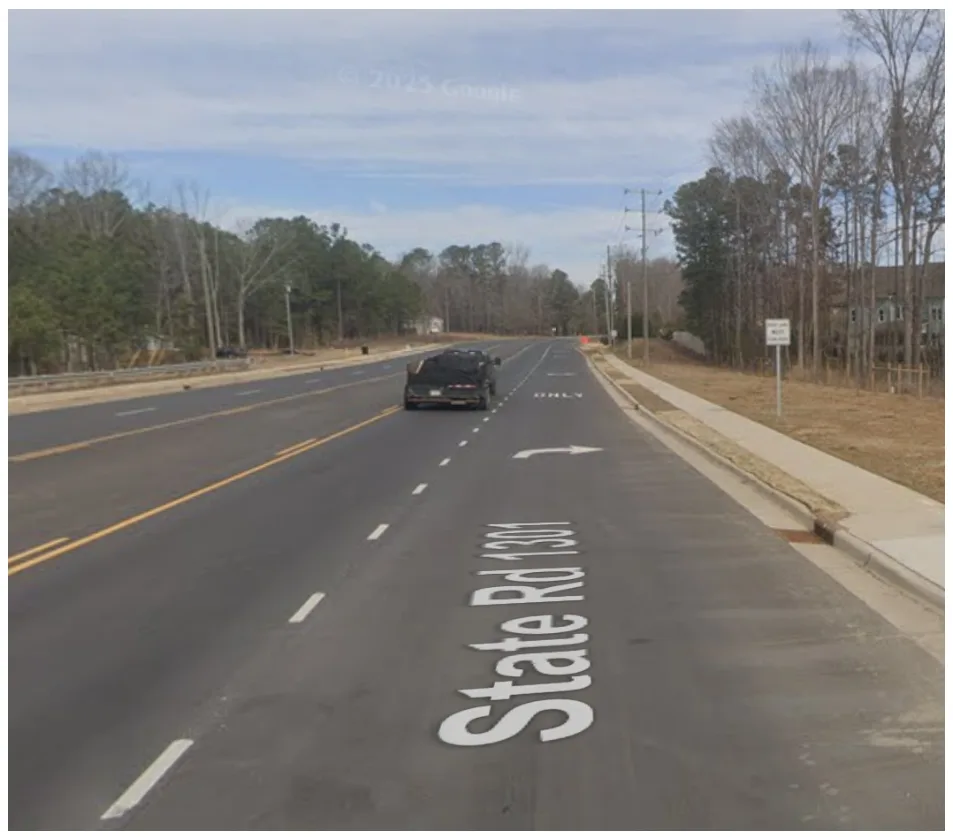
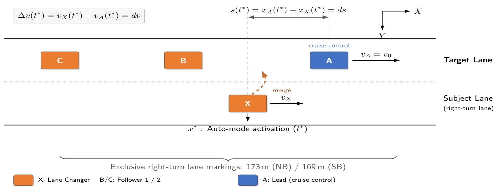
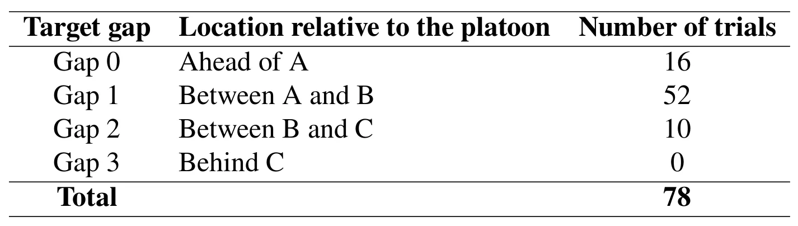

过渡型自动驾驶车辆换道控制实验：数据集与行为洞察Controlled Experiments on Lane Changing by Transitional Autonomous Vehicle: Dataset and Behavioral Insights
RTK-GNSS/INS 轨迹数据对车辆行为和安全评测有参考价值，但论文不贡献 GNSS 解算、SLAM 或多传感器融合算法，仅属外围专项。
一句话工作总结
以 78 次公共道路试验和高分辨率 RTK-GNSS/INS 轨迹刻画自动换道间隙与风险演化。
摘要
该工作发布 NC-tALC 数据集并研究过渡型自动驾驶车辆的强制换道行为。研究在北卡罗来纳州公共道路上完成 78 次可控试验，四辆 instrumented vehicles 构造可重复交通条件；高分辨率 RTK-GNSS/INS trajectories 用于识别关键时刻、计算 lead/lag/lane-change gaps，并以时间间隔和速度 surrogate safety measures 分析交互。结果显示不同初始条件下，lead 和 lag gaps 在跨线附近趋于较窄范围；风险随动作推进上升、在实际进入车道附近达到峰值，并主要由目标车道前车主导。
This paper presents the North Carolina Transitional Autonomous Vehicle Lane-Changing (NC-tALC) dataset and uses it to characterize mandatory lane-changing behavior of transitional automated vehicles (tAVs). It quantifies the evolution of lead--lag gaps throughout the lane-change process and examines how potential collision risk develops during the maneuver. A controlled field experiment comprising 78 mandatory lane-change trials was conducted on a public roadway in Apex, North Carolina. Four instrumented vehicles created repeatable traffic conditions while varying the lane changer's initial position within the candidate target gap. High-resolution RTK-GNSS/INS trajectories were processed to identify key timestamps, calculate lead, lag, and lane-change gaps, and estimate interactions using time-gap- and speed-based surrogate safety measures. Despite substantial differences in initial conditions, lead and lag gaps consistently converged toward a relatively narrow range near lane crossing. Potential collision risk increased as the maneuver progressed, peaked near physical lane entry, and was dominated by interactions with the target-lane leader. Lane-change completion did not necessarily coincide with the disappearance of collision risk. This study provides one of the first controlled empirical characterizations of the complete mandatory lane-change process of tAVs using repeatable public-road experiments. The NC-tALC dataset supports analysis of behavioral and safety evolution throughout the maneuver rather than only at the gap-acceptance instant. The dataset and findings provide empirical benchmarks for evaluating automated lane-changing behavior, calibrating behavioral models, and validating simulation and safety assessment methods for mandatory lane-change scenarios.
中文解读摘录
图表/页面预览
{kind=link}

{kind=link}

{kind=link}

{kind=link}

{kind=link}
